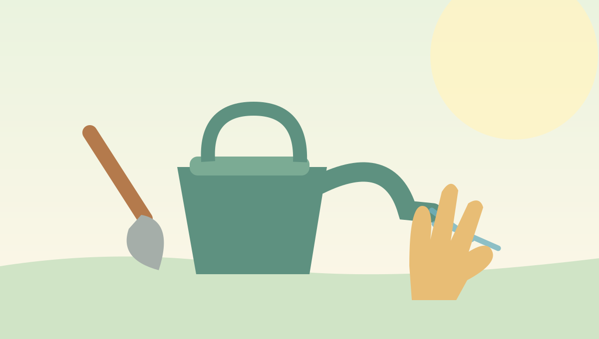

Green Balcony growing guide
Tips & Tools
The supplies and habits that make a small container garden manageable—even when your schedule is busy.

Beginner supply checklist
- Planters with adequate drainage holes and stable saucers
- High-quality container potting mix (not compacted yard soil)
- A watering can or bottle with a gentle spout
- Small trowel and optional gardening gloves
- Plant labels and a weather-resistant marker
- Stakes or a small trellis for plants that need support
A practical weekly routine
| When | What to do |
|---|---|
| Daily or as needed | Check soil moisture and leaf appearance. Water only when the plant needs it. |
| Twice a week | Look for pests, remove damaged leaves and rotate movable pots as appropriate. |
| Weekly | Harvest mature leaves or vegetables, inspect supports and review the forecast. |
| Occasionally | Refresh plant labels, prune as needed and fertilize according to the product directions. |
Container basics
For most standard containers, water must be able to drain out of the bottom. Choose an appropriately sized pot and a lightweight potting mix. Adding rocks to the bottom is not a substitute for proper drainage holes.
Questions and helpful sources
For quick answers, visit the interactive FAQ accordion on the home page. For guidance adapted to your location, start with your local university cooperative extension service.